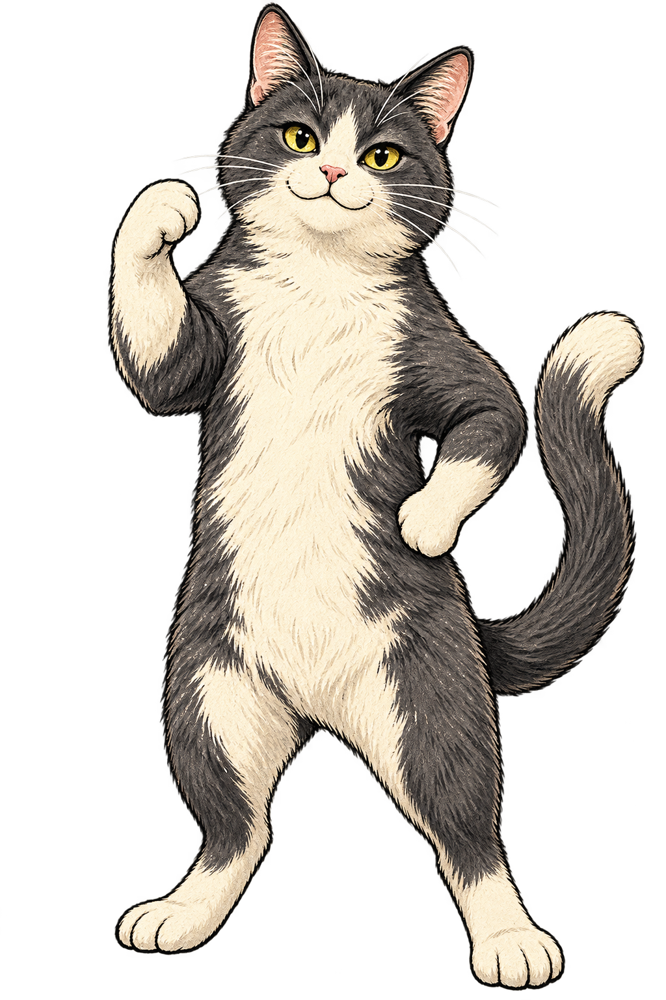

A LITTLE CONVERSATION STARTER
投票きっかけ待ち猫
投票も発言もしない

このページは、作品に登場する猫タイプの紹介です。共有した人の名刺画像や名前・好みを公開しているページではありません。名刺画像は、送ってくれた人と見せ合って楽しめます。
あなたも、好きなことから話が始まる一枚を。5つの問いを歩いたあと、呼ばれたい名前・いまの気分・好みを選んで、自分の家猫の名刺をつくれます。
自分の家猫の名刺をつくる ↗猫の類型と姿は作品の設計です。人物の性格・能力・健康状態の診断ではありません。研究とデータの説明 ↗